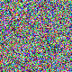

Event: CTF7 / Byteme2026 Category: Steganography Flag format: OWASP{...} Attachment: last_soul.png (80x80, 8-bit RGB, 19353 bytes, md5 251b95b5de291c4f084f0d0c00ca9ffe)

Flag
OWASP{th3_l4st_s0ul_w4s_n3v3r_l0st}TL;DR
Two encoding layers:
- Steganographic layer - data hidden in the RGB least-significant bits of the
PNG, read in
rgb,lsb,xyorder (bit 0 of R, G, B for every pixel, row-major). - Encoding layer - the extracted bytes are a Base64 string; decoding yields the flag.
Recon
An 80x80 RGB image has an uncompressed raw size of 80803 = 19200 bytes. The file is 19353 bytes - essentially incompressible, meaning the pixel data is close to random noise. That is a strong tell that every pixel's LSBs carry payload (which destroys normal image compressibility).
exiftool shows no metadata. binwalk shows only the PNG and its zlib stream
(no appended/embedded files). strings yields nothing readable. So the payload is
in the pixel bits, not in metadata or trailing data.
Extraction
zsteg -a immediately surfaced the payload on the b1,rgb,lsb,xy channel:
$ zsteg -a last_soul.png | grep -i rgb,lsb,xy
b1,rgb,lsb,xy .. text: "T1dBU1B7dGgzX2w0c3RfczB1bF93NHNfbjN2M3JfbDBzdH0="That is Base64. Decode it:
$ echo -n "T1dBU1B7dGgzX2w0c3RfczB1bF93NHNfbjN2M3JfbDBzdH0=" | base64 -d
OWASP{th3_l4st_s0ul_w4s_n3v3r_l0st}Independent reproduction (no zsteg)
extract.py reads the same bits directly with PIL + numpy and reproduces the flag,
so the result does not depend on a single tool:
1python3 extract.py
2# Layer1 (b1,rgb,lsb,xy): T1dBU1B7dGgzX2w0c3RfczB1bF93NHNfbjN2M3JfbDBzdH0=
3# Layer2 (base64 -d) : OWASP{th3_l4st_s0ul_w4s_n3v3r_l0st}Notes / gotchas
- Channel order matters:
rgb(R,G,B per pixel, row-major) is correct; other bit-planes / orders produce noise (zsteg reported many false "OpenPGP key" hits on random higher bit-planes - those are noise, not payload). - "Multiple encoding layers" = stego (LSB) + Base64. No password, no crypto.